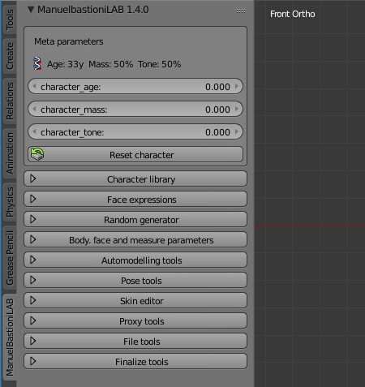

Creation tools
After the initialization, a human model with ideal proportions is placed in the centre of the Blender scene and the ManuelbastioniLAB panel will show a series of powerful tools to modify it.
There are six ways to manipulate the character:
- Using the meta parameters: body mass, body tone and age
- Loading a preset from the character library: types, specialtypes and phenotypes.
- Modifying the "low level" parameters: nose, eyes, mouth, legs, etc.
- Using the quasi-random generator.
- Using the automodelling tool.
- Using the measure tool.
Meta parameters
The metaparameters are the most intuitive way to define a character. Using this technology, the definition of the main traits of the character is matter of few seconds. The user interface is very easy to understand: just three intuitive sliders for the values of age, mass and tone.
- The age can vary from 18 to 80 y.o.
- The mass can vary from 0% to 100%.
- The tone can very from 0% to 100%
The percentage used for tone and mass indicates the variation of these parameters from a minimal amount (0%) to a max amount (100%). So 0% of mass is not intended as a character with no mass, but as a character with the minimal amount of mass required to live.
The height is not one of the metaparameters, because it's handled separately in the Measure system

Behind these three operators there is a complex algorithm that evaluates in real time tens of body features, using a non-linear computation to simulate the shape of human body in different conditions. As example, the image below shows the overview of the non-linear function used to calculate the effect of the age from 18 to 80 y.o.

The effect of meta parameters is very easy to predict: increasing the mass will lead to an increment of the body volume, but the "quality" of this mass depends by the tone. Of course, both "tone" and "mass" levels are affected by the age.


Define the character with preset library
Another way to quickly define a character is loading the parameters directly from the preset library
A "type" defines in one shot all the main features of the body: bone structure, fat percentage, mass and muscles. Each type is created upon anthropometric data and artistic observations and delineates the body of the character. Types are labelled using simple names, like "ideal fashion", "athletic", "lazy", "hourglass".
The system uses this kind of identifiers because they are less difficult to remember and more intuitive than scientific terms utilized in anthropometry.
Types can be selected via the intuitive GUI in the main panel, it's also possible to use the "Mix" option to blend different types.

A "special-type" differs from the "type" because it can describe non-realistic creatures (as example comic heroes, brute and other people with augmented proportions) or data-only entities (for example "older" and "younger" specialtypes).
Depending on the features that are modified and the way they are modified, types can be grouped in some big categories: types defined mainly by the variation of muscle and mass percentages, types defined mainly by the variation of proportions, types defined by basic shapes:
- Types defined mainly by the variation of muscle and mass percentages
- Complex types defined by the variation of proportions, mass and muscles
- Types defined by basic shapes
Also the library includes the important database for ethnic phenotypes:
There are also types and phenotypes for anime characters